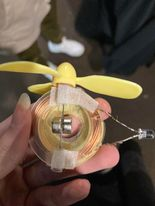
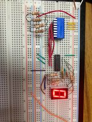
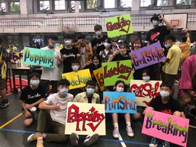

3個學習歷程
-
1.Metaverse:
This article is talking about my opinion on the Metaverse after reading the magazine. I'm looking forward to the day when it becomes common.
-

2.簡易發電機:
使用生活中就能買到的簡單材料，製作小型發電機，雖然最終實驗嘗試了很多次，燈泡最後還是無法發光，但發電機還是成功產生電流。
-

3.七段顯示器:
因為對電機的興趣，找到簡單的電路板實驗並且去實行他，實驗過程很順利也很成功，我也大致了解電路板的電路走向以及使用方法。

-
我的社團街文社:
高中是一個玩社團的時期，我參加的社團街文社(Kinshu)常常接到許多表演，能讓我盡情展現自己，也認識很多新朋友，在這個大家庭過得非常充沛且快樂，上大學之後希望可以繼續跳舞，之前因為玩社團擱置了學業，上了大學期間一定要好好克制自己，不要錯放重心。
自我介紹:
我是一個樂觀的人，遇到挫折時我第一個念頭可能會是沮喪、難過，但不會是放棄,同時我也是個很沒目標的人，常常不知道現在的自己應該做的是甚麼，但隨著我長大，我的思想也慢慢成熟，知道自己應該為了甚麼努力，尋找自己的興趣，好好把握接下來獲得的知識，開闊自己的視野，讓自己的未來有個保障，不讓家裡人擔心。